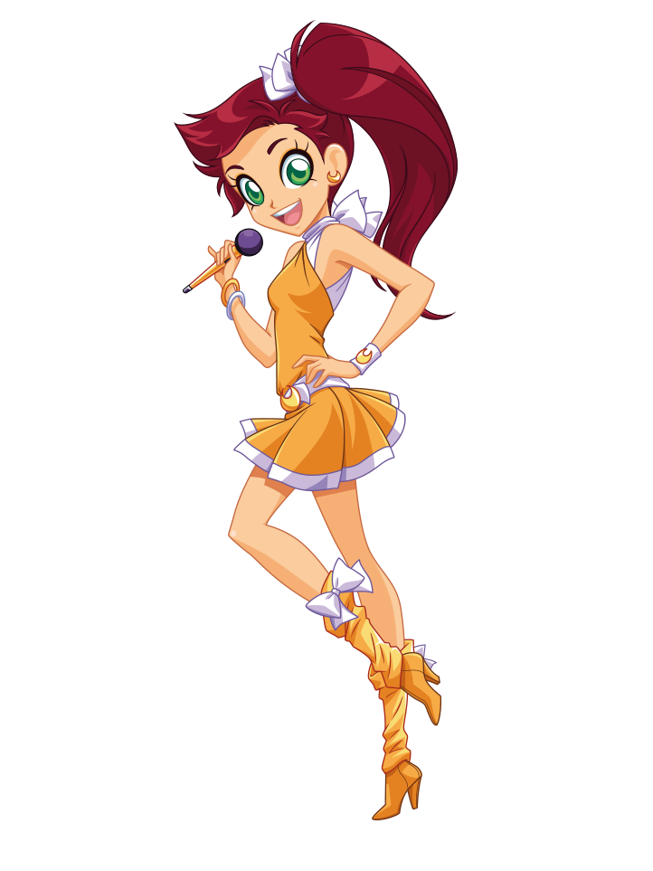
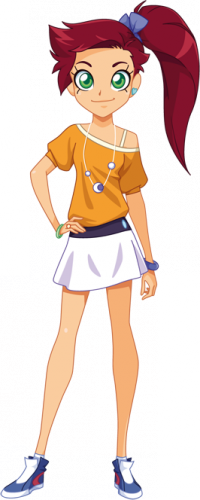
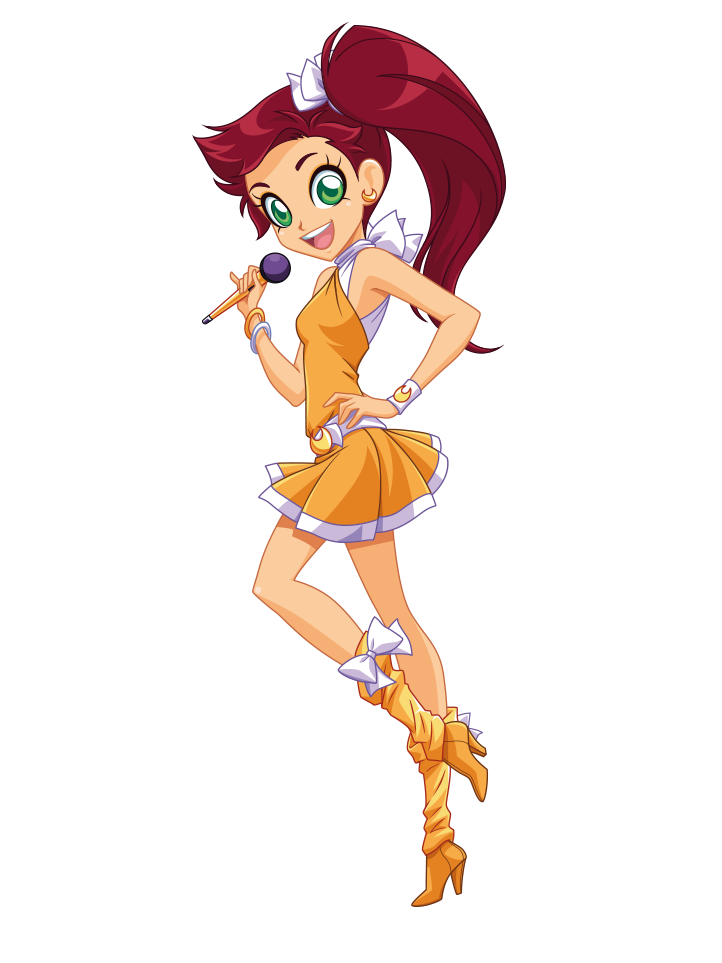
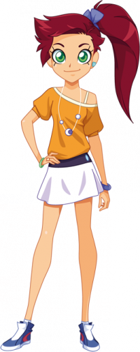

|
Auriana
Auriana è una quindicenne giocherellona e sognatrice.
È la principessa di Volta e uno dei membri della band LoliRock. Ha stretto amicizia con Iris
quando lei e Talia l'hanno scelta come cantante principale della band.
Le piacciono i bei ragazzi e ha molte sorelle. Inoltre le piacciono gli animali
La sua specialità è mettersi nei guai.
Auriana è la più ottimista e frizzante del gruppo ed è anche un'amica premurosa.
Auriana è molto abile negli incantesimi difensivi.
Ha gli occhi verdi e i capelli rossi, che di solito lega in una coda laterale ma quando si trasforma diventano arancioni.
Il suo gioiello di trasformazione è un anello con una pietra a forma di mezza luna.
Come seconda arma possiede il nastro di Volta, che usa come una frusta per attaccare e frenare i suoi nemici.
|
| Regno | Volta |
| Amici | Iris, Talia, Lyna, Carissa, Doug, Nathaniel |
| Nemici | Gramorr, Mephisto, Praxina |
| Passioni | Ragazzi, Vestiti, Abbracci, Animali |
| Odia | Separarsi dalla famiglia |
| Poteri | Cristallo magico |
| Arma | Nastro di Volta |
| Oggetto | Anello |
|

 


